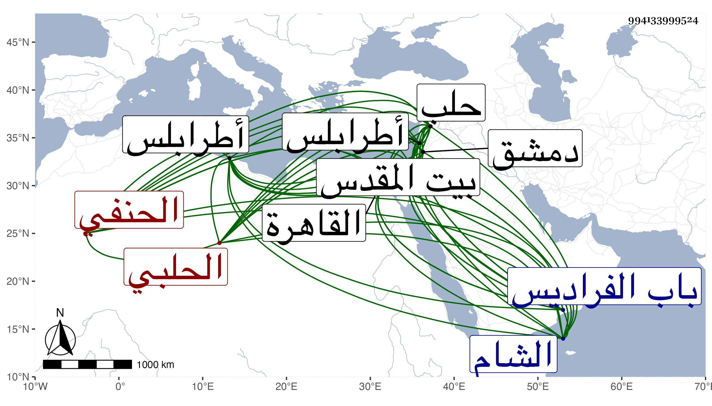

0902Sakhawi.DawLamic.ITO20230111-ara1.EIS1600.994133999524
Biography ID: 994133999524
519
محمد بن علي بن عمر بن علي بن مهنا بن أحمد الشمس أبو عبد الله بن العلاء الحلبي الحنفي أخو محمود الآتي ويعرف بابن الصفدي . ولد في يوم الجمعة ثامن ذي الحجة سنة خمس وسبعين وسبعمائة بحلب ونشأ بها فحفظ القرآن وكتبا منها المختار في الفقه ومختصر ابن الحاجب الأصلي ولازم الجمال الملطي في الفقه وأصوله وغيرهما وأخذ المعاني والبيان وغيرهما عن الشمس الزاهدي العنتابي الحنفي والمختصر وكافية ابن الحاجب وشروحها مع المفصل أصلها عن التاج الأصفهيدي الشافعي بل سمع عليه شرحه لألفية ابن ملك بحثا وقرأ على الشمس البسقامي الحنفي المصابيح وسمع عليه البخاري والمشارق وكذا سمع قبل ذلك البخاري والشفا في سنة إحدى وثمانين على الجمال إبراهيم بن العديم والشاطبيتين على الشهاب بن المرحل . ونشأ فقيرا فتكسب بالشهادة إلى أن تفنن وفاق الأقران . وسافر في سنة ثمانمائة إلى القاهرة مع شيخه الملطي حين طلب لقضائها فلما قدماها واستضاف البلقيني الملطي استصحبه معه وأوصاه بالجلوس بقربه ليذكره بالمنقول فيما لعله يقع التكلم فيه وناهيك بهذا جلالة ، وقرأ حينئذ على ابن الملقن في البخاري وحضر دروس السيف الصيرامي والد النظام وتزوج حينئذ بامرأة من بيت الكلستاني وساعدها في تحصيل ميراث لها ثم وهبته له بعد فكان يحكى أنه كان سبب ثروته . وولي إذ ذاك في زمن الظاهر برقوق قضاء طرابلس بتعيين شيخه الملطي له ولهذا كان يقول ما بالممالك الآن قاض من أيام برقوق غيري ، وأقام فيه مدة ثم صرف في ربيع الآخر سنة ست وثمانمائة بالتاج ابن الحافظ الحلبي ولم يلبث أن أعيد قبل مباشرة التاج وشكرت سيرته . ثم انتقل في رجب سنة اثنتين وثلاثين لقضاء الشام عوضا عن الشهاب بن الكشك وعزل منه مرارا منها في سنة ست وأربعين بحميد الدين النعماني ، وعرض عليه مرة قضاء حلب فأبى واتفق في مرور الأشرف لآمد أنه كان معزولا فانتزع له إما الخاتونية أو القصاعين تدريسا ونظرا من ابن الكشك وكذا باشر الصادرية والنورية . وامتحن في سنة أربع وأربعين ووجه إلى القدس بطالا وكذا حصلت له كائنة أخرى خلص منها بالبذل . وكان إماما عالما علامة أصوليا ماهرا بذلك مشاركا في الفنون مع الخير والعفة والسيرة الحميدة في قضائه وحسن العشرة وخفة الروح . وصفه شيخنا في حوادث سنة أربع وأربعين من إنبائه بأنه من أهل العلم لا ينكر عليه العمل بما رجح عنده . ونقل غيره عن العز القدسي أنه وصفه بمزيد الحفظ وقصوره في التحقيق . وقد حج وقدم القاهرة سوى ما تقدم غير مرة ، وحدث قديما بالموطأ ثم بان أن لا رواية له فيه وأن الغلط من البقاعي وهو قارئه ثم نقل عنه أنه قال له أن والده أحضره وهو موضع على الكمال بن حبيب وكان يقرئ أولاد بني حبيب وأن ثبته بذلك وبغيره ضاع منه في الفتنة وتأخر منه ورقة واحدة فيها حضوره للشفا على الكمال وتصحيحه بآخرها انتهى . وهذا لا يمنع بطلان سماعه للموطأ على ابن حبيب فقد بين البرهان الحلبي الحافظ بطلانه وكذا حدث ببيت المقدس ولقيته بالقاهرة وأخذت عنه أشياء . مات في يوم السبت ثاني عشري رجب سنة اثنتين وخمسين بدمشق معزولا ودفن بمقبرة باب الفراديس بطرفها الشمالي رحمه الله وإيانا .
